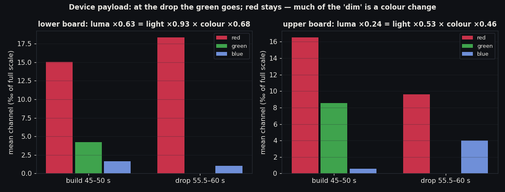
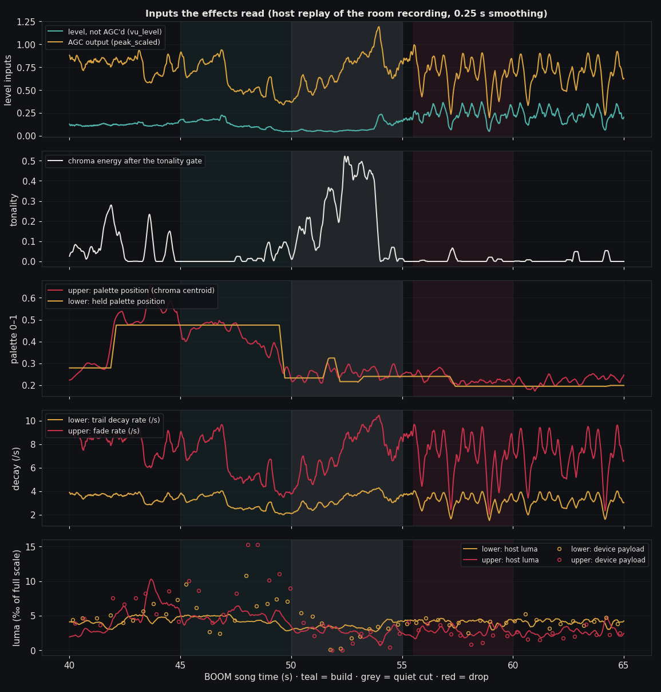
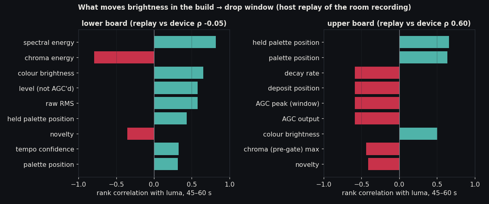
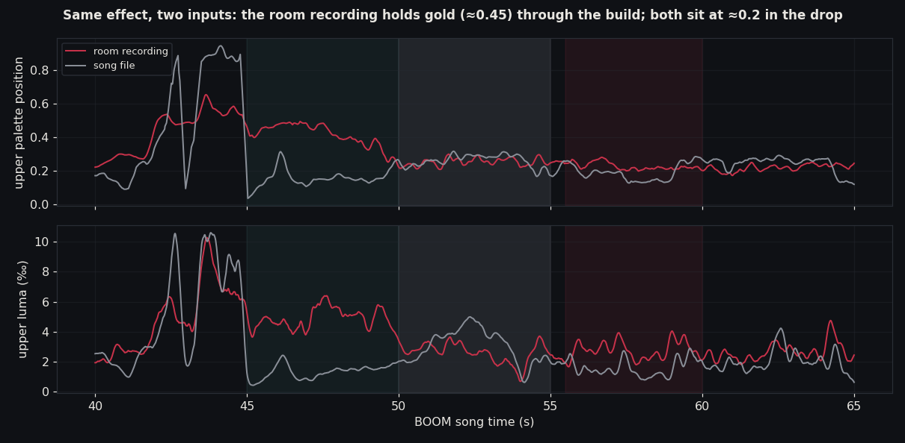

The automatic gain control (AGC) does squeeze loudness, but neither v8 effect turns loudness into brightness. Colour comes from the music's harmony, and it switches from gold to red about six seconds before the drop, when the build's tonal section ends. Louder sound makes the trails fade faster. Red counts for much less brightness than gold. So the lower board gives out almost the same light in the drop (×0.93), while its luma falls to ×0.63.
| Candidate | Contributes to the dim drop? | Evidence | A fix would touch |
|---|---|---|---|
| AGC configuration | No verified |
From build to drop the AGC output rises ×1.34 (0.664 → 0.889, device) while upper luma falls ×0.24. Host replay: luma against AGC output ρ −0.59 (room recording) and −0.69 (song file), upper board. Peak follower: attack time constant 30 ms, release 1.99 s, per 7.5 ms frame (inhouse_audio.cpp:226–233). |
inhouse_audio.cpp:226–233. Changing it would restore loudness contrast in peak_scaled, but under the current mapping louder fades faster inferred. |
| AGC placement | Partly peak AGC verified · spectral path inferred |
The peak AGC runs in the time domain, beside the Goertzel bank, and never reaches the colour path (code). Colour comes from a separate chain: spectral AGC → chroma auto-normaliser → tonality gate. Chroma energy ×0.35 from build to drop; upper palette position 0.41 → 0.23 at ≈49.5 s (host, room recording). | The spectral AGC in inhouse_audio.cpp (≈296–330); the chroma normaliser and tonality gate at inhouse_waveform.cpp:130–157. |
| Effect mapping | Yes verified |
Device payload, build to drop: lower luma ×0.63 = light ×0.93 × colour ×0.68; upper luma ×0.24 = light ×0.53 × colour ×0.46. Colour follows the chroma centroid (inhouse_waveform.cpp:284–304). Level speeds the fade: decay 0.8 + 3.5 × peak (:222) and fade target 1 − 0.10 × peak (:341). The Tempo board has no path from level up to brightness (:334–352). |
inhouse_waveform.cpp: map level to deposit gain or width rather than faster decay; how colour is held when tonality drops out; the palette's low-luma red end. |

peak_scaled and on to the payloadvu_level, not AGC'dinhouse_audio.cpp:211–225peak_scaledinhouse_audio.cpp:226–233peak_scaled / vu_level set deposit gain (≈1 when active), position and decay (louder = faster)inhouse_waveform.cpp:117–124, 169–222, 334–352fact Gates that can force darkness: the silence flag (5 s dwell), the spectral noise gate, the tonality gate and the donor admission gate. Fixed scalings: response gain 1.0, display brightness 1.0, output intensity 0.25.

agc-trace-boom-recording.csv). The room recording's level was calibrated with one gain factor (×89.6), so that the host's raw RMS median over 28–75 s matches the device's (0.1187). Circles show the device's own payload snapshots.

drive = max|x| − 350 over each 96-sample frame (inhouse_audio.cpp:213, 226).:228).:23–27).peak_scaled smoother: 0.65 → 5.4 ms; 0.15 → 57 ms.Time domain, on raw frame peaks, beside the Goertzel bank and not before it. The spectrum has its own AGC (③). peak_scaled never feeds the Goertzel bank or the colour.
PDM → DMA → loud guard → ASRC 12.8 kHz → 96-sample frame → peak − 350 → follower → ÷ → smoother → peak_scaled
Computed in the donor Emotiscope analysis (emotiscope_port.cpp:372–383). Neither v8 effect reads it. The v8 path uses only the donor's PCM peak², and only to open or close the admission gate (composed_scene_runtime.h:26–33).
product_effect_renderer.cpp:746/797/1326 is not compiled into this build (build_scalar.py:728). The v8 effects run in inhouse_waveform.cpp.renderInhouse passes palette − 1). The probe is fixed; tempo and level results are unaffected.agc-trace-boom-recording.csv, agc-trace-boom-source.csv. Calibration: agc-trace-meta.json. Numbers: agc-trace-summary.json.
Replay: tests/host/p3_tempo_probe.cpp (the existing v8 replay entry point), driven by scripts/p3_agc_trace.py. Figures: scripts/p3_agc_trace_plots.py.